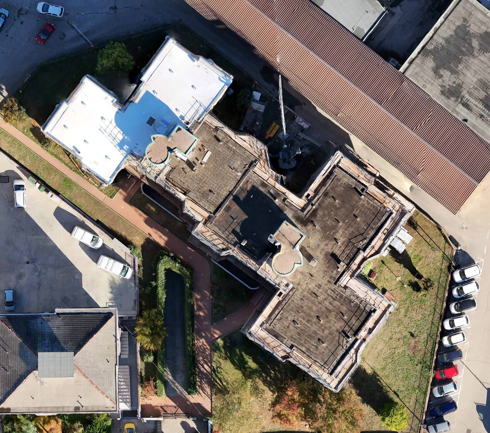
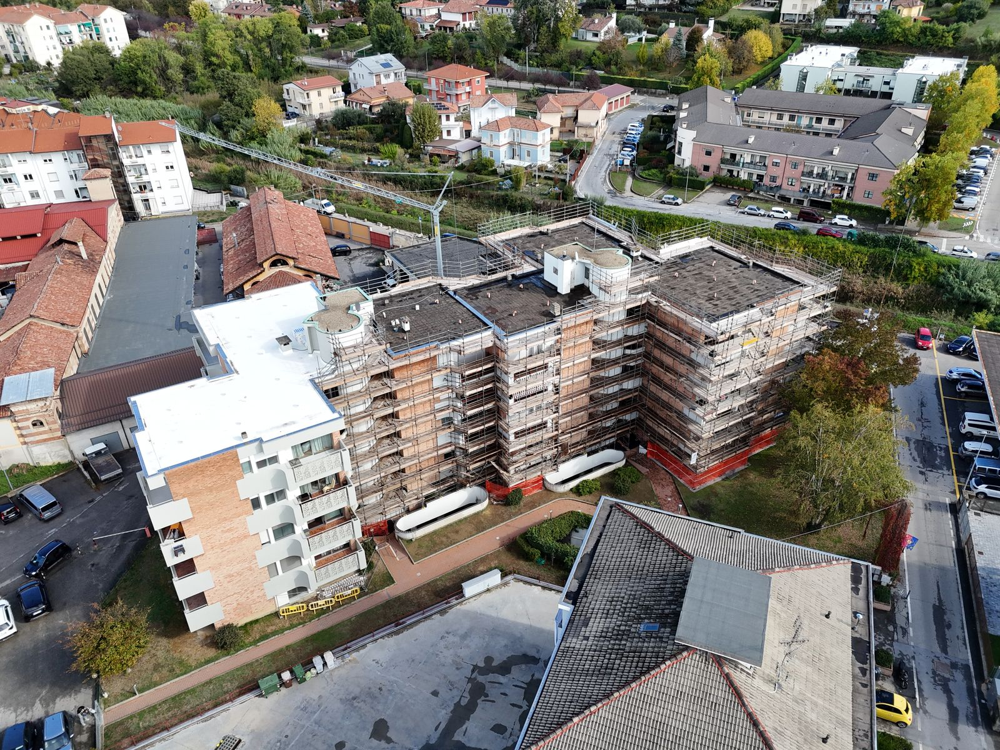
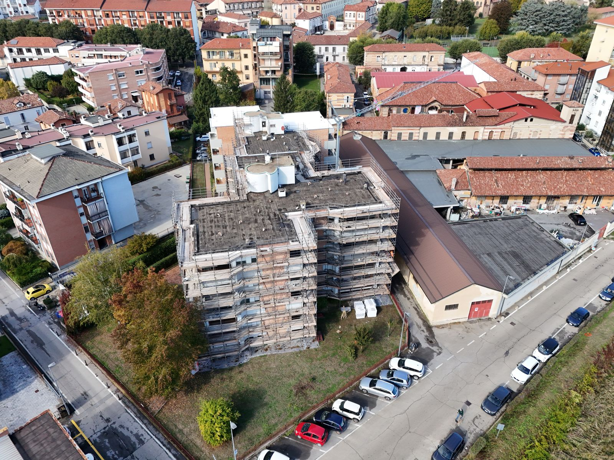
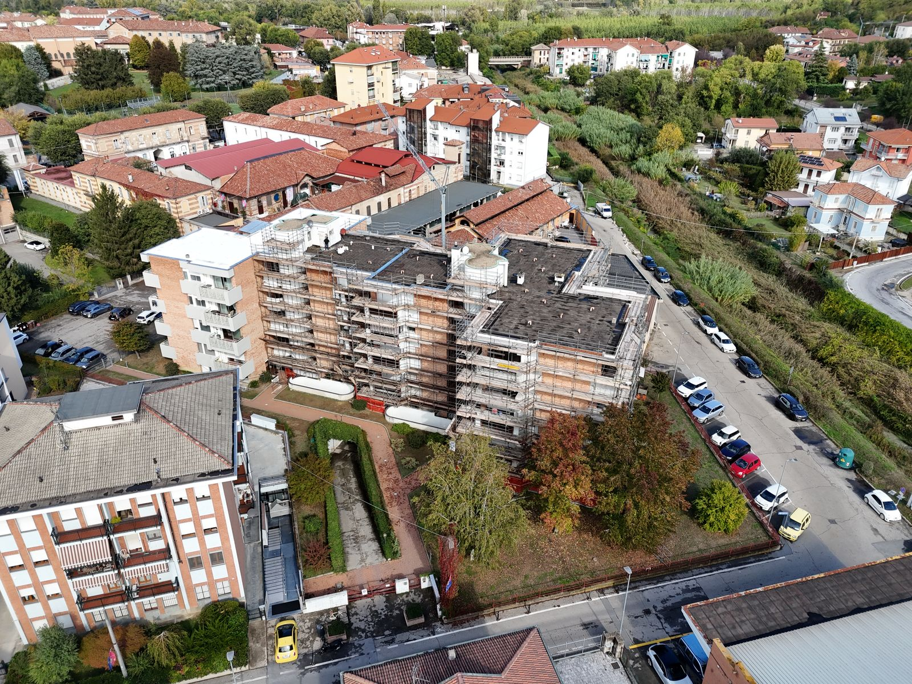
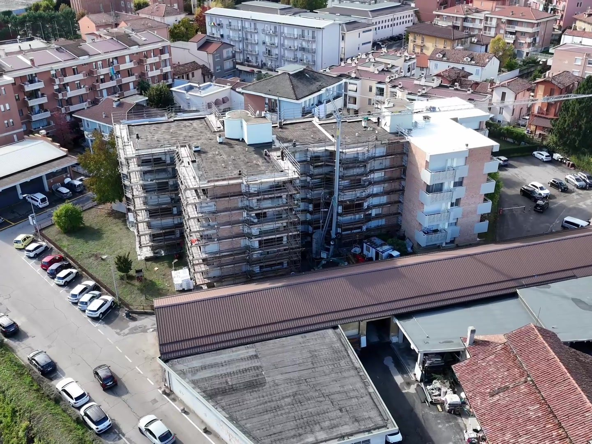

Construction & Real Estate
One site, every deliverable.
A single visit to a building under renovation produced all of the work below: a 360° orbit, a scaled orthomosaic map, and detailed stills from every side.
360° orbit video
Every side of the building in one smooth pass. Useful for progress updates, owner reports and marketing.
Orthomosaic map
Hundreds of overhead photos stitched into one scaled, GPS-referenced map. Move your cursor over it to see the detail, or click to open the full-resolution version.

Hover to magnify · click for full resolution ↗Stills from every angle
High-resolution photos of the scaffolding, roofs and surrounding site.




What clients use it for
The same flight serves several needs at once.
- Progress recordsDated documentation of each phase of work.
- PlanningScaled maps for layouts, staging and measurements.
- Stakeholder updatesClear visuals for owners, lenders and teams.
- MarketingListing and portfolio imagery that stands out.
Have a project in mind?
Send the location and what you need, and I'll get back to you with options and a quote.
Get a quote